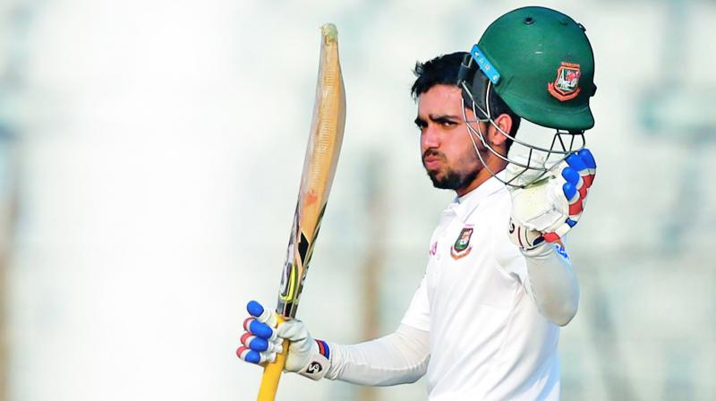

Upcomming Match date:
Mashrafe Mortaza
Mashrafe Bin Mortaza is a Bangladeshi international cricketer and politician who is the former captain in all three formats of the game for the Bangladesh national cricket team.
Tamim Iqbal
Tamim Iqbal Khan is a Bangladeshi international cricketer. He is the current Bangladesh ODI captain. Tamim made his ODI debut in 2007 and played his first Test match the following year.
Shakib Al Hasan
Shakib Al Hasan is a Bangladeshi international cricketer and philanthropist. Shakib is considered to be one of the greatest all-rounders of all times.He was ranked as one of the world's most famous athletes by ESPN World Fame 100 in 2019.
Mushfiqur Rahim
Mushfiqur Rahim is a Bangladeshi cricketer and the former captain and vice-captain of the Bangladesh national cricket team. He is considered as the best and most successful captain of Bangladesh in tests.
Mahmudullah
Mohammad Mahmudullah Riyad is a Bangladeshi cricketer and the current T20I captain. He has played First-class and List A cricket for Dhaka Division and has represented Bangladesh in all forms of the game.
Mustafizur Rahman
Mustafizur Rahman is a Bangladeshi international cricketer. He is specialized as a left-arm fast-medium bowler. He has taken the most wickets (13) in a debut One Day International (ODI) series. He is the first player to win the ‘Man of the Match’ award on both Test as well as ODI debuts.
Saif Hassan
Mohammad Saif Hassan is a Bangladeshi cricketer. He made his international debut for the Bangladesh cricket team in February 2020.[1] Hassan's mother's family is from Sri Lanka.
Mehidy Hasan
Mehidy Hasan Miraz is a Bangladeshi international cricketer who plays Tests, One Day Internationals (ODIs) and Twenty20 for the Bangladesh national team.A bowling-all-rounder, he is a right-handed batsman and a right-arm off break bowler.
Rubel Hossain
Mohammad Rubel Hossain is a Bangladeshi cricketer. He has the bowling average of any pacer who has bowled at least 2,000 deliveries in Test cricket.Hossain made his Test, ODI, and T20I debuts in 2009. A quick bowler with a slingy action similar to Lasith Malinga's— He also innovates a technique of delivery named 'Butterfly'.
Taskin Ahmed
Taskin Ahmed Tazim is a Bangladeshi cricketer. He is a right-arm fast bowler and a left-handed batsman. He represents Dhaka Metropolis in first-class and List A cricket and the Rangpur Rangers franchise in the Bangladesh Premier League.
Nurul Hasan
Quazi Nurul Hasan Sohan is a Bangladeshi first-class and List A cricketer. Hasan is a wicket-keeper batsman and plays as a right-handed batsman. He was born in Khulna, Bangladesh.
Mohammad Saifuddin
Mohammad Saifuddin is a Bangladeshi cricketer. An all-rounder, in December 2015 he was named in Bangladesh's squad for the 2016 Under-19 Cricket World Cup. He started playing for Bangladesh's national team in 2017.
Daraz
Leading online e-commerce platform Daraz has been announced as the sponsor of the Bangladesh National Cricket team for the next two years, BCB announced via a press release today.
Read MoreCaptains
ODI Captain
Tamim Iqbal
T20 Captain
Tamim Iqbal
Test Captain
Mominul Haque
Treanding News

Shakib not available for second Test against South Africa: BCB chief selector
Bangladesh all-rounder Shakib Al Hasan will not be available for the second Test against South Africa, BCB's chief selector confirmed on Friday (April 1). Shakib had to return home from South Africa after the third ODI due to a family emergency. BCB, however, didn't rule him out of the Test series as they had hoped that he would be available for the series-concluding second Test against South Africa. Shakib is understood to be flying over to the USA on Friday. ''He (Shakib) is not available for the second Test against South Africa,'' said Minhajul Abedin to Cricbuzz. ''He informed us that he will be going to the USA as he needs to set up his family there,'' he added.

Fractious Bangladesh risk taking eye off the ball
Many cricketminded South Africans - and surely also Bangladesh's more serious, less blindly nationalistic supporters - would want to tell Mominul Haque's team something of that sort as they prepare for the second Test at St George's Park. If the visitors don't pull themselves out of their damaging downward spiral of negativity about matters they cannot change, what started as their most successful tour of South Africa could end in ignominy.

BCB to lodge official complaint to ICC on umpiring
Bangladesh Cricket Board said on Monday that they will lodge an official complaint to International Cricket Council about South Africa's umpiring at Kingsmead after the ongoing series. Several decisions went against the host in the two-match Test series opener while tourist skipper Mominul Haque insisted after the game that they were a victimof severe sledging. According to players of the touring camp and BCB officials, the umpiring of Adrian Thomas Holdstock and his senior partner Marais Erasmus was certainly not up to the mark.